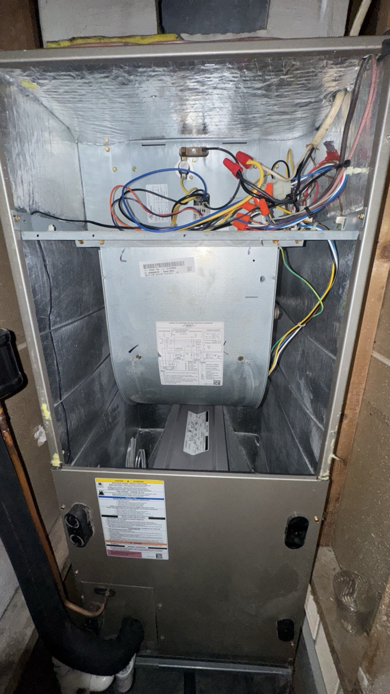
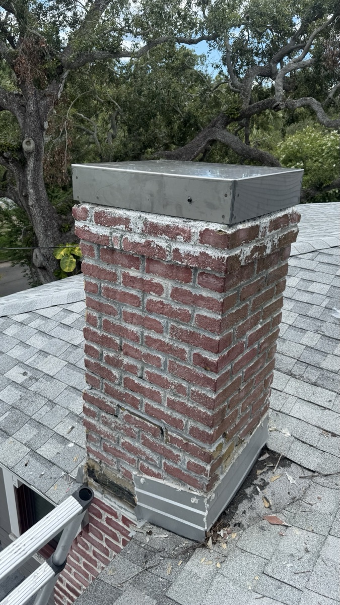
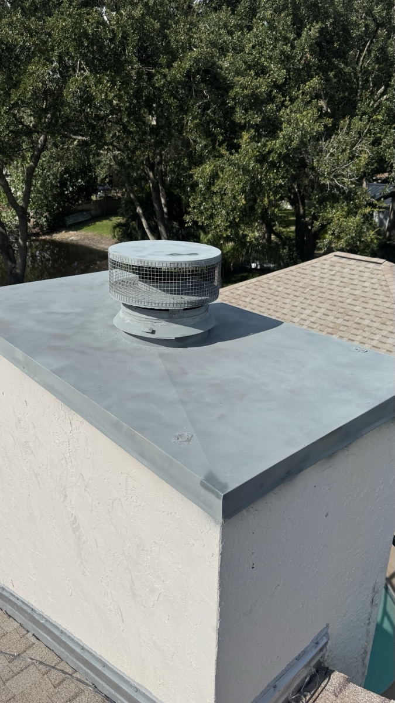
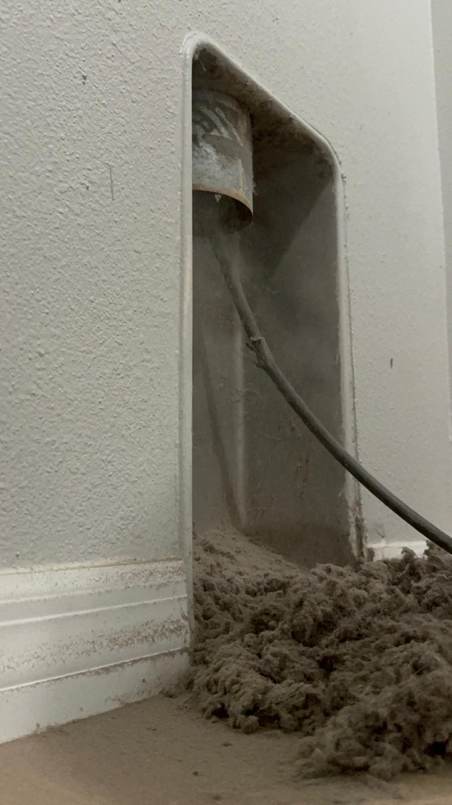

Musty AC smell? Weak cooling? Sky-high electric bill? In Tampa Bay's 75%+ humidity, ductwork and AC coils trap mold spores, oak pollen, dust mites, and biological buildup year-round.
We fix that — with a documented Florida-tuned cleaning process, flat-rate pricing from $99, and same-day service across Tampa, St. Pete, Clearwater, Brandon, Riverview, and Wesley Chapel.
Master Cleaning Services is a family-run HVAC cleaning team that's spent the last decade focused on one thing: getting Florida ductwork and AC systems back to factory-clean condition. Tampa Bay isn't Boston, isn't Atlanta, isn't anywhere else — our climate creates HVAC problems that most generic duct-cleaning playbooks aren't built for.
Cleaner air. Cooler rooms. Lower bills. Honest pricing.
That's the whole job.
A coated evaporator coil and dust-loaded duct system don't just smell bad — they force your AC to run longer, draw more amps, and never quite hit the thermostat. In a Florida home running cooling 9 months a year, that adds up fast.
Four core services, one Florida-tuned crew. We can do any one, or bundle them in a single visit.

Negative-pressure extraction plus rotary brush agitation across every supply and return line. Clears years of dust, oak pollen, pet dander, and mold buildup typical of Florida HVAC systems. From $99.
Learn More →
The Tampa specialty. Evaporator coil, blower wheel, and drain pan cleaning to fix musty smell, weak cooling, and high electric bills. Optional condenser coil clean on the outdoor unit. From $99.
Learn More →
Full lint removal from the entire vent run — wall exit, roof exit, or long horizontal runs in two-story Florida homes. Cuts dry time, drops energy use, and clears the #1 fire hazard in your laundry room. From $79.
Learn More →
For the Tampa Bay homes that do have a fireplace — soot, creosote, animal nests, and a Level 1 inspection. Code-compliant and ready before the cool season. From $99.
Learn More →For context: Angi puts the average Tampa duct cleaning at $300–$700. Our packages start much lower because we run lean and don't upsell.
4.7 / 5 — Based on 200+ verified Google reviews
"After two summers of musty AC smell, these guys finally fixed it. Cleaned the evaporator coil and the whole duct system — the cold air smells fresh again. Worth every dollar."
"We had visible mold around two return vents. The tech showed me exactly what was going on, sealed off the area, and ran negative pressure for a full clean. House feels lighter, my wife's allergies are way better."
"Booked them on a Tuesday, they came Wednesday morning. Honest pricing, no upsell pressure, took before-and-after photos inside the ducts. Highly recommend."
"Newer build, but the dryer was taking 90 minutes per load. Vent was packed with lint after only 3 years. They cleared the whole run, drying time is back to one cycle."
"Booked between tenants. Job done in 3 hours, price was exactly what they quoted. New tenants commented on how clean the air felt. Will use them on every turnover."
"Work itself was excellent — ducts look brand new and the AC is noticeably cooler. Only reason for 4 stars is they showed up about 40 minutes late without calling ahead. Would've appreciated a heads-up. But the job quality? No complaints at all."
"Had both the air ducts and dryer vent done in one visit. Tech was thorough, explained everything he found, and the price matched exactly what I was quoted. House smells completely different now — in a good way."
"Decent job on the ducts — definitely cleaner than before. Scheduling was a bit frustrating, they had to reschedule on me once and arrived late on the second try. The tech himself was professional and knew what he was doing, so I'd probably use them again but with lower expectations on timing."
"Our 2022 build had never been cleaned and the tech showed us the photos from inside the ducts — shocking how much construction dust was still in there. Everything is clean now and the AC actually reaches the back bedrooms properly."
"Good service overall. The AC coil cleaning made a real difference — electric bill dropped noticeably the next month. Knocked one star because the arrival window was 10–12 and they showed at 12:45, which pushed my afternoon. Results were solid though."
Same supply duct, photographed before extraction and after our negative-pressure cleaning.


Roughly half of homes in southwest Florida battle a hidden indoor moisture problem during summer. When indoor humidity sits above 60%, evaporator coils, drain pans, and duct interiors become mold habitat — and once it's there, every cooling cycle pushes those spores back into your living space. Our cleaning process is built around removing the buildup, drying out the system, and applying EPA-registered antimicrobial sanitizer where it's needed. We can also recommend MERV-13 filter upgrades and whole-home dehumidifier integration to keep the system clean longer.
📞 Book a Free Tampa Inspection — (813) 285-7449



We cover six counties around Tampa Bay. Don't see your town? Call us — we likely serve it. View all service areas →
The questions Tampa homeowners actually ask before hiring an air duct or AC cleaning company.
Master Cleaning Services is a Tampa-based HVAC cleaning team handling air duct cleaning, AC evaporator coil cleaning, blower wheel and drain pan cleaning, dryer vent cleaning, and chimney cleaning across all of Tampa Bay. Our service area covers Hillsborough, Pinellas, Pasco, Sarasota, Manatee, and Polk counties — including Tampa, St. Petersburg, Clearwater, Brandon, Riverview, Wesley Chapel, Lutz, Plant City, Lakeland, Sarasota, and Bradenton. Call (813) 285-7449 for a free inspection.
Independent pricing data from Angi and Homeyou puts Tampa air duct cleaning at $300–$700 on average (most homes around $450, hourly rates around $89–$104). Our flat-rate residential package starts at $99, AC coil cleaning starts at $99, dryer vent at $79, and our most popular Air Duct + Dryer Vent combo starts at $149. Free inspection, firm quote, no hidden fees.
Three Florida-specific reasons: (1) Tampa Bay outdoor humidity averages 75% and indoor humidity above 60% turns evaporator coils and drain pans into mold habitat. (2) Air conditioning runs nearly year-round, so more dust, dander, and biological matter passes through the duct system every day. (3) Tampa has one of the longest pollen seasons in the U.S. — oak alone runs December through May — and that pollen recirculates through your home 5–7 times per day if ductwork isn't clean. We recommend duct cleaning every 2–3 years and AC coil cleaning every 1–2 years for most Tampa homes.
Yes — AC coil cleaning is one of our most-requested services in Tampa. Dirty evaporator coils are the leading cause of weak cooling, high electric bills, and the musty "dirty sock" smell when the AC starts up. Our standard AC service covers the evaporator coil, blower wheel, and drain pan. We can also clean the outdoor condenser coil and apply EPA-registered antimicrobial sanitizer at the customer's request.
Industry guidance from NADCA recommends every 3–5 years generally. In Tampa Bay's humidity, we recommend every 2–3 years for most homes — and more often for households with pets, allergy sufferers, smokers, or visible mold growth at the registers. AC coil cleaning is on a separate schedule: every 1–2 years is appropriate for nearly any Florida home.
Look for: (1) musty or mildew smell when the AC kicks on, (2) visible dust trails on walls or ceilings near vents, (3) one or two rooms that won't cool to set point, (4) condensation or water staining around register grilles, (5) electric bills climbing month-over-month with no usage change, (6) family members with worse allergy or sinus symptoms indoors than outdoors, and (7) more than 3–5 years since the last cleaning.
A typical 3-bedroom Tampa home takes 2–4 hours. Larger homes, dual-zone systems (common in newer New Tampa and Wesley Chapel builds), or systems with heavy mold/mildew buildup will take longer. We give a firm time estimate after the walk-through.
If your dryer takes more than one cycle, the laundry room runs hot, you smell burning lint, or it's been over a year since the last service — schedule it now. Florida humidity makes lint clump and stick to vent walls faster than in dry climates, and longer vent runs in two-story Brandon, Riverview, and New Tampa homes catch even more buildup. The U.S. Fire Administration links roughly 2,900 home fires per year to clogged dryer vents.
Yes — we run service crews seven days a week, 7 AM to 9 PM, with same-day appointments when our schedule allows. South Tampa, Hyde Park, Westshore, and Brandon are easiest to fit same-day; Wesley Chapel, Sarasota, and Bradenton sometimes require next-day. Call (813) 285-7449 for current availability.
Master Cleaning Services Tampa
📞 (813) 285-7449 ✉️ Masterinductcleaning@gmail.com 💬 WhatsApp Us🕐 Mon–Sun: 7:00 AM – 9:00 PM
📍 Tampa, FL — Serving Hillsborough, Pinellas, Pasco, Sarasota, Manatee & Polk counties
We respond within 1 hour during business hours.